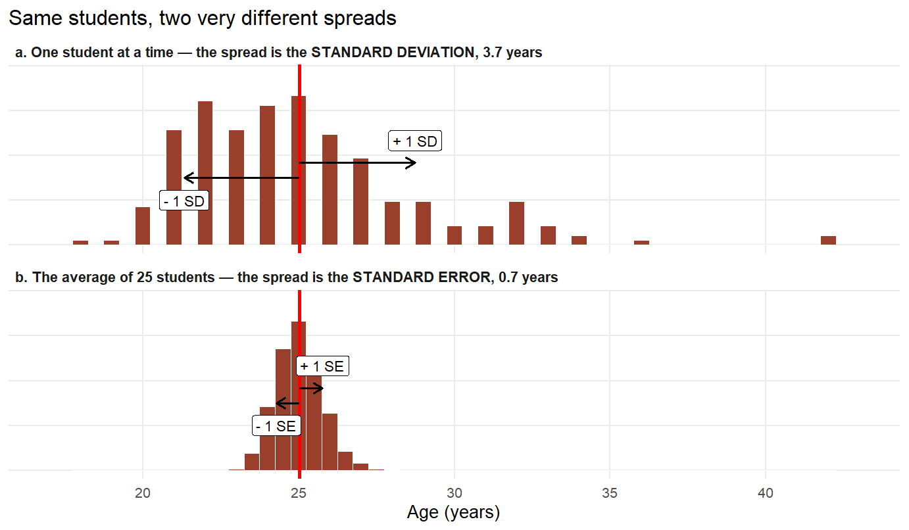
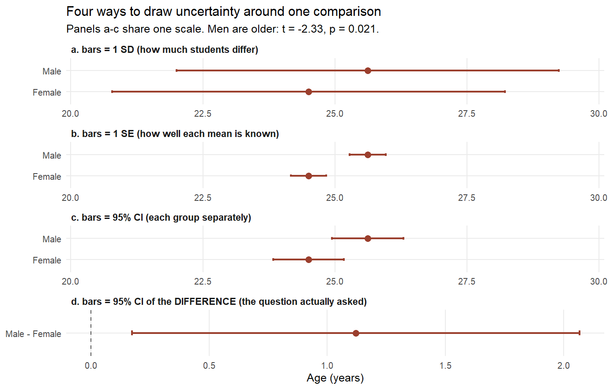
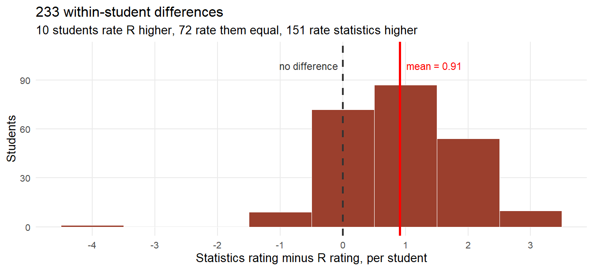
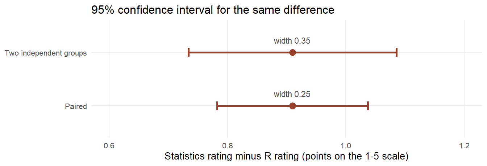
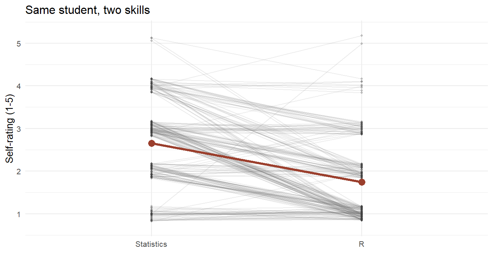

5.2 Comparing Means
One mean, two independent groups, and paired observations
"The brewer wants to know how confident he can be that the barley in his hand is as good as the sample he tested. He cannot test it all. He cannot even test much of it."
Section 5.1 asked whether two variables move together. This section asks something even more elementary, and even more common: is this average different from that one? Do women and men arrive in this course with different statistics backgrounds? Are Master students older than Bachelor students? Does the same student rate two of their own skills differently? Almost every empirical claim you will ever read — about wages, treatments, test scores, attitudes — is at bottom a comparison of means. This section is about when such a comparison can be trusted.
5.2.1 A brewer invents modern statistics
In 1899 the Guinness brewery in Dublin hired a young Oxford chemist named William Sealy Gosset. His job was quality: barley, hops, and beer vary, and Guinness wanted to know which barley varieties were genuinely better rather than luckier. The problem was the sample size. A brewery experiment might yield four observations — four plots, four malt extracts — and the statistical theory of the day, built for hundreds of observations by astronomers, quietly fell apart at \(n = 4\).83
Gosset worked out how the average of a small sample behaves, publishing the result in Biometrika in 1908 as "The probable error of a mean". He could not publish under his own name: Guinness barred its scientists from publishing after an earlier paper had given away information competitors could exploit. So the paper appeared under a pseudonym, and the most-used distribution in applied statistics is named after that pseudonym rather than its author: Student.84
The tool you will use for every test in this section was invented not by a professor with unlimited data, but by a brewer who could afford almost none. That is worth remembering: the t-test is a tool for honest uncertainty about small evidence. When samples are large, it barely matters; when samples are small, it is the difference between knowledge and wishful thinking.
Gosset originally called his statistic \(z\). The letter \(t\) came later, through Fisher's reworking of the theory.
5.2.2 The data: seven cohorts of students
The examples in this section and the next use one dataset, so it is worth introducing properly. On the first day of every term from summer 2020 to winter 2023/24, students in this seminar filled in the same short questionnaire before anything was taught. Seven cohorts, 233 usable responses.85
Alongside term, gender, academic level, age and total semesters studied, three items asked students to rate their own background on a five-point scale anchored at 1 = Beginner and 5 = Advanced:
Background in Statistics — Please rate your background knowledge in statistics.
Background in R — Please rate your background knowledge in R programming.
Background in Academic Writing — Please rate your background knowledge in academic writing.
A fourth, open-ended item asked What do you expect to learn in this seminar? — text rather than a number, and therefore material for the chapter on text data rather than for a t-test.
coursedata <- read.csv("data/Course/GF_AllTime.csv", sep = ";") %>%
filter(Age < 100)
dim(coursedata)
#> [1] 233 9Three features of this data shape everything that follows. The three ratings are self-assessments, not tests: they measure confidence as much as competence, which is exactly what makes the gender comparison below interesting rather than trivial. The scale is bounded at 1 and 5, so a group already near an endpoint has less room to move. And the three items were answered by the same person, which is what makes the paired comparison in section 5.2.6 possible at all.
5.2.3 Signal and noise
Every test in this section is the same fraction wearing three different coats:
\[t = \frac{\text{signal}}{\text{noise}} = \frac{\text{difference we observed}}{\text{difference we would expect from chance alone}}\]
The numerator is an estimate — a mean minus a benchmark, or one group mean minus another. The denominator is that estimate's standard error: how much the number would wobble if we could rerun the sampling again and again.
Definition
The standard error of the mean is the standard deviation of the sampling distribution of the mean:
\[\text{se}(\bar{x}) = \frac{\text{sd}(x)}{\sqrt{n}}\]
It shrinks with \(\sqrt{n}\): four times the data buys half the wobble.
5.2.3.1 Deviation and error are not the same word
The two quantities differ by a single square root, and confusing them is one of the most common mistakes in reading empirical results. It is worth slowing down here, because the mistake is not arithmetic — it is a mistake about what the number is describing.
The standard deviation describes the people. It answers: how far is a typical individual from the average? It is a fact about the world, and it does not get smaller when you collect more data. Ask a thousand more students their age and students still differ from one another by about four years.
The standard error describes your knowledge. It answers: how far is my estimate of the average likely to be from the truth? It is a fact about your evidence, and it does get smaller as you collect more — that is the entire reason to collect more.
| Standard deviation | Standard error | |
|---|---|---|
| Question it answers | How much do individuals differ? | How precise is my estimate? |
| It describes | the population | your uncertainty |
| More data... | leaves it roughly unchanged | shrinks it by a factor √n |
| Use it when | describing your sample | testing or estimating a mean |
The picture makes it concrete, and it is drawn the same way as the storks in section 5.1: the red line is the mean, and the arrows step out one unit of spread on each side.

Figure 5.11: Individuals scatter widely (a); their averages barely move (b). The standard deviation measures the first picture, the standard error the second.
Panel a shows the 233 students one at a time. The mean is 25.0 years and the standard deviation is 3.7, so the arrows reach from 21.3 to 28.7 — and by the empirical rule from section 5.1 we would expect roughly 68% of students to fall inside that band. In this data 70.4% do, which is about as close to the textbook as real, floor-bounded age data ever gets.
Panel b repeats the exercise for averages: draw 25 students, record only their mean age, repeat. Those averages have a standard deviation of their own — that is the standard error — and it is 0.7 years. Same students, same horizontal scale, a spread five times narrower, because \(\sqrt{25} = 5\).
sd(coursedata$Age) # how much students differ
#> [1] 3.705614
sd(coursedata$Age) / sqrt(nrow(coursedata)) # how well we know their average
#> [1] 0.2427628Because the two are linked by \(\sqrt{n}\), the ratio between them is fixed by the sample size alone. With 233 students, \(\sqrt{233} = 15.3\), so every variable in this file has a standard error exactly 15.3 times smaller than its standard deviation — age, statistics rating, R rating, all of them. Nothing about the variable matters. Only \(n\) does.
Professionals get this wrong, in print
This is not a beginner's slip. Peter Nagele went through all 860 research articles published in four anaesthesia journals in 2001 and found that 198 of them — 23%, nearly one in four — used the standard error of the mean where they should have used the standard deviation, reporting the precision of an average as if it were the variability of patients.86
Why does the mistake run in that direction? Because the standard error is always the smaller number. Reporting "mean ± 0.24" instead of "mean ± 3.71" makes any result look tidier, and no reviewer can tell from the figure alone which one you used.
The misreading runs deeper than reporting. Belia, Fidler, Williams and Cumming e-mailed the authors of articles in leading psychology, neuroscience and medicine journals and asked 473 of them to position error bars at the point where two means would be just significantly different. Most could not. Their conclusion: many leading researchers "have severe misconceptions about how error bars relate to statistical significance, do not adequately distinguish CIs and SE bars, and do not appreciate the importance of whether the 2 means are independent or come from a repeated measures design".87
5.2.3.2 From standard error to confidence interval
The standard error is a unit of wobble; on its own it is hard to interpret. What people actually report is a range built from it.
Definition
A 95% confidence interval for a mean is the estimate plus and minus a critical t-value times its standard error:
\[\bar{x} \pm t_{0.975,\,n-1} \cdot \text{se}(\bar{x})\]
For anything but a tiny sample the multiplier is close to 2, so the shorthand "the estimate, give or take two standard errors" is close enough for reading purposes.
The 95% refers to the procedure, not to any one interval: if you repeated the whole study many times, 95% of the intervals built this way would contain the true value. Any particular interval either contains it or does not.
For the age of our students, the mean is 25.03 with a standard error of 0.243, and the multiplier at 232 degrees of freedom is 1.97:
\[25.03 \pm 1.97 \times 0.243 = [24.56,\ 25.51]\]
That interval is the single most useful thing you can report. It contains the estimate, it carries the precision, and — because you can check whether it excludes a benchmark — it silently performs the hypothesis test as well. This is why confidence intervals appear in every test output in this section, and why the tables below always carry one.
Truly Dedicated: Do overlapping error bars mean "no difference"?
This is the single most common way of misreading a figure, and our own data provides the counter-example. Women in this course average 24.50 years, men 25.62. Each group's own 95% confidence interval is [23.83, 25.17] and [24.94, 26.30] — they overlap, by 0.23 years. And yet the difference between the two means is statistically significant, \(t = -2.33\), \(p = 0.021\).

Figure 5.12: The same comparison drawn four ways. Panels a-c share one scale, so the bars really are that different in length. Only panel d answers the question that was asked.
Read the four panels. The standard-deviation bars in a span eight years and tell you nothing about the comparison — they describe students, not means. The standard-error bars in b are 15 times shorter. The confidence intervals in c are the ones a careful author would draw, and they overlap. Only panel d — the interval around the difference itself — sits clearly away from zero, which is what "significant" means here.
Cumming, Fidler and Vaux quantify the trap: for two independent groups with \(n \ge 10\) per group, 95% confidence intervals can overlap by about a quarter of their length and still leave \(p < 0.05\), while standard-error bars must show a gap of one full bar before \(p\) reaches 0.05.88 Two things break even these rules: small samples, where the bars must be stretched further, and paired data, where the two groups' bars say nothing whatsoever about the interval for the difference.
The habit that follows is simple: when the claim is about a difference, plot the difference. Two bars side by side invite the reader to do arithmetic they cannot do.
5.2.3.3 How big does t have to be?
You will hear the rule of thumb \(|t| > 2\) everywhere: in regression output, in referee reports, in this book. It covers everything in this chapter and the next. The one-sample test, the two-sample test, the paired test, the slope of a regression coefficient, the correlation test of section 5.1 — all of them build the same fraction and compare it against the same distribution. There is no separate threshold to memorise for each test. That is precisely what Gosset gave us: one reference distribution for any average-shaped estimate divided by its own standard error.
What the rule glosses over is that the exact cut-off depends on the degrees of freedom, a quantity that will follow you through the rest of this book.
Definition
The degrees of freedom of a statistic are the number of independent pieces of information that went into it, minus the number of quantities you had to estimate along the way:
\[df = n - (\text{parameters estimated})\]
Once you know the mean of three numbers and two of the values, the third is not free — it is determined. So a one-sample t-test, which estimates one parameter (the mean), has \(df = n - 1\). A two-sample test estimates two means and has \(df = n_1 + n_2 - 2\). A regression with \(k\) predictors plus an intercept has \(df = n - k - 1\), and the same accounting reappears far from t-tests: a factor model in the Reveal chapter (8) is identified only if the number of observed covariances exceeds the number of loadings and variances it wants to estimate.
Degrees of freedom are, in every one of these cases, the amount of evidence you have left over after paying for what you estimated.
The number 2 is a rounding of 1.96, which is the large-sample value:
| Sample size | Degrees of freedom | Critical |t| at 5% | p-value when |t| = 2 |
|---|---|---|---|
| 4 | 3 | 3.18 | 0.139 |
| 5 | 4 | 2.78 | 0.116 |
| 10 | 9 | 2.26 | 0.077 |
| 30 | 29 | 2.05 | 0.055 |
| 100 | 99 | 1.98 | 0.048 |
| 233 | 232 | 1.97 | 0.047 |
| 1000 | 999 | 1.96 | 0.046 |
Read the last column. With 100 observations, \(|t| = 2\) gives \(p = 0.048\) and the rule of thumb is honest. With 30 it gives \(p = 0.055\) and the rule is very slightly too generous. With 4 observations — Gosset's brewery — \(|t| = 2\) gives \(p = 0.139\), nowhere near significance, and applying the rule of thumb there would be a real error. From roughly \(n = 30\) upwards, \(|t| > 2\) is a safe shortcut; below that, look the number up.
And one thing the rule never covers: importance. The 5% convention is a threshold on evidence, chosen by Fisher for convenience and hardened by eighty years of habit into something it was never meant to be. A \(t\) of 2.1 and a \(t\) of 1.9 are almost the same amount of evidence; only a publication system pretends otherwise. Report the estimate and its interval, and let \(t\) be one piece of information rather than a verdict.
5.2.4 One mean against a benchmark
Take the R rating first. The scale midpoint is 3. Do students, on average, arrive below the middle?
The average is 1.75 — apparently far below 3. But "apparently" is exactly what a test is for. The one-sample t-test asks: if the true average were 3, how surprising would a sample average of 1.75 be, given 233 students with this much spread?
\[t = \frac{\bar{x} - \mu_0}{\text{sd}(x)/\sqrt{n}} = \frac{1.75 - 3}{0.92/\sqrt{233}} = \frac{-1.25}{0.060} = -20.7\]
t.test(coursedata$Background.in.R, mu = 3)
#>
#> One Sample t-test
#>
#> data: coursedata$Background.in.R
#> t = -20.704, df = 232, p-value < 2.2e-16
#> alternative hypothesis: true mean is not equal to 3
#> 95 percent confidence interval:
#> 1.627521 1.866041
#> sample estimates:
#> mean of x
#> 1.746781This is the only time in this section a t-test is printed in full, so it is worth walking through the block line by line. This is what your own console will show you, and reading it fluently is a skill in its own right. From here on the results appear in tables, because the interesting comparisons come in fours and fives and no reader should have to diff five screens of output by eye.
| What R prints | What it means |
|---|---|
One Sample t-test |
which of the three tests R decided to run |
t = -20.704 |
the signal-to-noise ratio: the gap is 20.7 times its own wobble |
df = 232 |
233 students minus 1 for the mean we estimated |
p-value < 2.2e-16 |
smaller than R's printing limit — chance alone will not explain this |
alternative hypothesis: ... not equal to 3 |
the comparison is two-sided: a gap in either direction would have counted |
95 percent confidence interval: 1.63 1.87 |
the useful line: plausible values for the true average |
mean of x: 1.75 |
the estimate itself |
A \(t\) of −20.7 means the observed gap is about twenty times larger than its own wobble. The p-value is astronomically small, and the confidence interval — 1.63 to 1.87 — says the same thing more usefully: whatever the true average of the population these students come from, it is nowhere near 3. Students arrive as R novices. (This is, frankly, the least surprising finding in this book. The course exists because of it.)
Your Turn
The same students rate their statistics background at 2.66 on average and their academic writing at 2.86.
Both are below 3. The statistics rating has \(t = -5.2\), the writing rating \(t = -1.7\). Which of the two is statistically significantly below the midpoint at the usual 5% level?
Notice what that means: a smaller gap can be significant while a similar-looking one is not — significance is about the gap relative to its noise, never about the gap alone.
5.2.4.1 Why sample size decides everything
Here is the same lesson small enough for mental arithmetic. Three students rate their R skills 1, 2 and 3. Is the average different from the midpoint 3?
The mean is , the deviations from it are −1, 0, +1, so the variance is \((1 + 0 + 1)/2 = 1\) and the standard deviation is 1. Put the general formula and the numbers on the same line:
\[t = \frac{\bar{x} - \mu_0}{\text{sd}(x)/\sqrt{n}} = \frac{2 - 3}{1/\sqrt{3}} = \frac{-1}{0.577} = -1.73 \qquad (p = 0.225)\]
A gap of a full point on the scale — and no evidence. Now suppose twelve students had produced the same pattern, the values 1, 2, 3 repeated four times. Same mean, nearly the same standard deviation, four times the data:
\[t = \frac{\bar{x} - \mu_0}{\text{sd}(x)/\sqrt{n}} = \frac{2 - 3}{0.853/\sqrt{12}} = \frac{-1}{0.246} = -4.06 \qquad (p = 0.002)\]
Nothing about the difference changed. Only the amount of evidence did. Quadrupling the sample halves the standard error and so doubles \(t\) on its own; the rest of the jump comes from the standard deviation settling slightly lower once there are twelve values to estimate it from.
This is the single most important thing to understand about significance testing, and it cuts both ways: with three observations you can miss a real effect, and with three million you can "detect" one too small to matter to anybody. A t-test answers is this difference distinguishable from chance — never is this difference large, and never does this difference matter.
5.2.5 Two independent groups
The more common comparison is between two groups of different people. Our questionnaire offers a socially interesting one. A well-known result in sociology is that men rate their own mathematical ability higher than women who perform identically — Shelley Correll showed this with US high-school data, and argued it quietly steers career choices long before any actual ability difference could.89 Does our seminar show the same pattern in self-rated statistics background?
| Gender | n | Mean rating | SD | SE |
|---|---|---|---|---|
| Female | 122 | 2.61 | 0.94 | 0.085 |
| Male | 111 | 2.70 | 1.08 | 0.102 |
Men rate themselves 0.09 points higher. The two-sample t-test asks whether a gap of this size, between groups of 122 and 111, is distinguishable from chance. Four comparisons fit in one table:
comparisons <- list(
"Statistics rating" = t.test(Background.in.Statistics ~ Gender, data = coursedata),
"R rating" = t.test(Background.in.R ~ Gender, data = coursedata),
"Writing rating" = t.test(Background.in.Academic.Writing ~ Gender, data = coursedata),
"Age (years)" = t.test(Age ~ Gender, data = coursedata))| Female - Male | t | df | p | CI low | CI high | |
|---|---|---|---|---|---|---|
| Statistics rating | -0.088 | -0.66 | 219.6 | 0.509 | -0.35 | 0.17 |
| R rating | 0.119 | 0.98 | 230.3 | 0.328 | -0.12 | 0.36 |
| Writing rating | -0.021 | -0.13 | 231.0 | 0.894 | -0.34 | 0.29 |
| Age (years) | -1.122 | -2.33 | 230.0 | 0.021 | -2.07 | -0.17 |
Three of the four rows are null results, and not marginally so: the statistics gap has \(t = -0.66\) and \(p = 0.51\), and its confidence interval runs from women 0.35 points behind to women 0.17 ahead. The R rating even leans the other way, with women rating themselves higher by 0.12 points — also indistinguishable from chance. Whatever Correll measured in US high schools does not announce itself in this room.
The fourth row is real. Male students are 1.1 years older, \(t = -2.33\), \(p = 0.021\), and the interval excludes zero. Note how ordinary that sentence sounds and how much machinery sits underneath it: two sample means, two sample spreads, two sample sizes, one standard error of the difference, and Gosset's distribution to judge the ratio.
Be careful with what the null results do and do not say. "No significant difference in self-rated statistics background" is not the same as "there is no difference". Our confidence interval allows anything from women 0.35 points behind to 0.17 points ahead — it is an interval of ignorance, not a certificate of equality. With 233 students we can rule out a large confidence gap in this course; we cannot rule out a small one. Absence of evidence, once again, is not evidence of absence.
Truly Dedicated: Student or Welch?
Look at the degrees of freedom in the table: a decidedly un-whole 219.6, 230.3, 231.0, 230.0. Whole numbers would be 231 in every row.
The classical two-sample test assumes both groups have the same variance. In 1947 Bernard Welch worked out a version that drops this assumption, at the price of those fractional degrees of freedom.90 R uses Welch by default, and this is a deliberately opinionated choice: when the variances happen to be equal, Welch loses almost nothing; when they are not, the classical test can be badly misleading. You get the classical test only by asking for it, with var.equal = TRUE.
For the age comparison the two versions agree to two decimals, \(t = -2.33\) either way. When the answer changes between them, that itself is telling you the groups differ in spread — which may be more interesting than the means (more on this at the end of section 5.3).
5.2.6 Paired observations
The third coat the t-statistic wears is subtler, and it is the one social scientists most often fail to recognise when they meet it. Compare the students' statistics rating with their R rating. Two means: 2.66 and 1.75. You might reach for the two-sample test — but these are not two groups of people. They are the same 233 people, measured twice.
Most textbooks introduce pairing as a before and after design, and many readers come away thinking pairing means time. It does not. Pairing means only that each observation in one condition has exactly one partner in the other, and that the two partners share something the analysis should not have to estimate.
Definition
Two measurements are paired when they are linked one-to-one by design rather than by chance, so that the difference between them can be computed for each unit individually. Common forms:
- The same unit at two times — a patient before and after treatment, a country in 2019 and 2021. The familiar case.
- The same unit under two conditions — a subject in a quiet and a noisy room, a firm's output with and without a subsidy.
- The same unit on two measures — a student's statistics rating and R rating. Our case, and the most common one in survey research.
- Two different units matched deliberately — twins, a patient and a matched control, a treated village and its nearest neighbour. Here the "unit" is the pair, not the person.
The test is always the same: compute the difference within each pair, then run a one-sample test on those differences against zero.
Our case is the third kind, and it deserves one honest caveat. Statistics and R are different things, so the comparison is not "is this skill higher than the same skill later" but "does this person place themselves higher on one scale than on the other". That question is legitimate — it is precisely how a curriculum designer decides where to start — but it leans on both items sharing the same 1-to-5 Beginner-to-Advanced anchors, which they do. If the two items had different anchors, the difference would be uninterpretable no matter how significant it was.
The mechanics are less mysterious than the name. Pairing is subtraction: build one column of within-student differences, and the two-sample problem collapses into the one-sample problem you already solved.
differences <- coursedata$Background.in.Statistics - coursedata$Background.in.R
mean(differences) # the paired estimate, already
#> [1] 0.9098712
table(sign(differences)) # -1 rates R higher, 0 equal, +1 rates statistics higher
#>
#> -1 0 1
#> 10 72 151That column of 233 numbers is the whole test, and it is better seen than tabulated. Draw it:

Figure 5.13: The paired t-test in one picture: is this distribution of within-student differences centred away from zero?
The picture is the test. The dashed line at zero is the null hypothesis; the red line is where the data actually sit. The question "are these two means different?" has become "is this pile of numbers centred away from zero?", which the eye can answer before the arithmetic does. Running t.test(differences, mu = 0) would now give exactly the paired result — paired = TRUE is a convenience, not a different procedure.
5.2.6.1 The same data, analysed both ways
Rather than assert that pairing helps, run the identical numbers through both tests and put the results side by side. Nothing changes except one argument:
stats_rating <- coursedata$Background.in.Statistics
r_rating <- coursedata$Background.in.R
unpaired <- t.test(stats_rating, r_rating) # pretends they are strangers
paired <- t.test(stats_rating, r_rating, paired = TRUE) # knows they are the same people| Difference | SE | t | df | CI low | CI high | CI width | |
|---|---|---|---|---|---|---|---|
| Treated as two independent groups | 0.91 | 0.089 | 10.17 | 460.7 | 0.73 | 1.09 | 0.352 |
| Treated as paired (correct) | 0.91 | 0.065 | 14.10 | 232.0 | 0.78 | 1.04 | 0.254 |
Read the table across. The estimate does not move: 0.91 points either way, because the average of the differences is the difference of the averages — that piece of arithmetic is not in dispute. Everything to the right of it moves. The standard error falls from 0.089 to 0.065, the t-statistic rises from 10.2 to 14.1, and the confidence interval narrows from 0.35 points wide to 0.25.
Why? Because people differ from each other far more than a person differs from themselves. A generally confident student rates both skills high; a modest one rates both low. In the two-sample setup, all of that between-person personality sits in the denominator as noise. In the paired setup it cancels — subtracting a student's two ratings subtracts their personality along with it. The two ratings correlate at 0.48, and that correlation is exactly what pairing converts into precision.

Figure 5.14: The same estimate with two different amounts of confidence. Pairing does not change what we found; it changes how well we know it.
5.2.6.2 What the shrinking standard error is worth
"The standard error fell from 0.089 to 0.065" is a true sentence that persuades almost nobody. Here is the same fact in a currency everyone understands.
Pairing bought a standard error 28% smaller. To buy the same 28% by collecting more data instead — asking one set of students about statistics and a different set about R — you would need about 448 students in each group rather than 233. And because those are two disjoint sets of people, that is 896 respondents in total instead of 233: nearly four times as many, for exactly the same answer.
se_paired <- sd(differences) / sqrt(length(differences))
(var(stats_rating) + var(r_rating)) / se_paired^2 # students needed per group
#> [1] 447.7598The reason is the square root. Precision improves only with \(\sqrt{n}\), so every further increment of confidence costs quadratically more fieldwork, while pairing costs one argument.
5.2.6.3 Does pairing always help?
Nearly always — but "always" is too strong, and the exception is worth understanding because it tells you why the method works.
The variance of a difference is
\[\text{var}(x - y) = \text{var}(x) + \text{var}(y) - 2\,\text{cov}(x, y)\]
and everything hinges on that last term. Pairing pays off exactly when the two measurements are positively correlated, because only then does subtracting them remove more noise than it adds. Written in terms of the correlation \(r\), the paired standard error is smaller than the unpaired one by a factor of \(\sqrt{1 - r}\).
| Correlation r | SE ratio (paired / unpaired) | Verdict |
|---|---|---|
| -0.5 | 1.225 | pairing is 22% worse |
| 0.0 | 1.000 | a wash, minus the lost df |
| 0.3 | 0.837 | 16% better |
| 0.6 | 0.632 | 37% better |
| 0.9 | 0.316 | 68% better |
Three regimes, then. When \(r > 0\) — the normal case, because the same unit carries the same idiosyncrasies into both measurements — pairing wins, and wins more the stronger the link. When \(r = 0\) the standard errors are identical, but the paired test has only \(n - 1\) degrees of freedom instead of \(n_1 + n_2 - 2\), so it is very slightly worse. When \(r < 0\), pairing is actively harmful.
So the honest statement is not "pairing always helps" but something sharper and more useful: pairing is not a choice you make at the analysis stage — it is a fact about your data that the analysis must respect.
If the observations are paired, analysing them as independent groups is not a missed opportunity, it is wrong: the two-sample formula assumes independence, and your observations are not independent. If they are not paired, you cannot pair them however much you would like the narrower interval. The efficiency gain is the reward for a good design, not a knob to turn afterwards.
And notice what this implies for study design. Two measurements on the same unit are worth far more than two measurements on different units. That is the whole economic argument for panel data in section 2.2: following the same people over many waves rather than surveying fresh people each year buys precision that fresh samples could only match at several times the cost.
The paired t-test is the smallest possible panel — exactly two waves — and the "subtract each unit from itself to remove everything constant about the unit" move is the essence of the fixed-effects estimator. With \(T\) waves instead of 2, the same logic sweeps out everything permanent about a person: their upbringing, their personality, their unmeasured ability. Everything you learn here about why pairing works is the intuition for why panel data is worth its cost.
The individual picture explains the arithmetic. Each grey line below is one student:

Figure 5.15: Each line is one student. Most lines fall from statistics to R; a confident student is high on both, a modest one low on both - pairing subtracts that away.
5.2.7 Where this is going
Three tests, three coats, one fraction. You now have the whole t-test family, and with it the vocabulary — standard error, confidence interval, degrees of freedom — that every later chapter assumes.
Two extensions follow. The immediate one gets the next section: what happens when there are not two groups, but seven? That is the analysis of variance, and it is the reason Fisher went to work on a farm.
The deeper one has to wait. Every test in this section can be rewritten as a regression — the two-sample t-test turns out to be the smallest regression there is, and the same is true of the correlation test, of ANOVA, and of most of the non-parametric tests you have heard of. That is a genuinely unifying idea, but it is only unifying once you know what a regression is. So it is deferred to the end of the Model chapter (section 6.9), where it can be shown rather than promised.
Your Turn
Master students report on average 1.95 more total semesters of study than Bachelor students (\(t = 4.8\)). Before calling that a discovery, state what the boring explanation is — what must be true of Master students by definition?
A newspaper reports: "Study with 2.4 million users finds people who use app X are significantly happier (p < 0.001), by 0.02 points on a 10-point scale." Which is doing the work here, the signal or the sample size?
A figure reports a mean income of 2,400 € with a bar labelled "± 40", based on 900 respondents. Is 40 more likely to be a standard deviation or a standard error?
Two groups' 95% confidence intervals overlap slightly. This proves the two means are not significantly different.
You measure the same countries' unemployment in 2019 and 2021 and want to test whether the pandemic changed the average. Which test?
A colleague ran a paired experiment on 40 subjects but analysed it as two independent groups of 40. The analysis is merely inefficient but still valid, because the estimate of the difference is unbiased either way.
Gosset's life and the brewery context: Ziliak, S. T., Guinnessometrics: The Economic Foundation of "Student's" t, Journal of Economic Perspectives 22(4), 2008, 199–216, https://doi.org/10.1257/jep.22.4.199. A short account: The genius at Guinness and his statistical legacy, The Conversation, 2018, https://theconversation.com/the-genius-at-guinness-and-his-statistical-legacy-93134.↩︎
Student, The probable error of a mean, Biometrika 6(1), 1908, 1–25, https://doi.org/10.1093/biomet/6.1.1. Guinness's publication ban followed an earlier paper that had revealed commercially useful information; Gosset's identity was an open secret among statisticians long before his death in 1937.↩︎
data/Course/GF_AllTime.csvin this book's repository, 234 responses in total. One respondent gave their age as 278 and is removed here byfilter(Age < 100); that case is discussed in the chapter on missing data. Note the semicolon separator.↩︎Nagele, P., Misuse of standard error of the mean (SEM) when reporting variability of a study sample. A critical evaluation of four anaesthesia journals, British Journal of Anaesthesia 90(4), 2003, 514–516, https://doi.org/10.1093/bja/aeg087. Misuse ranged from 11.5% of articles in the European Journal of Anaesthesiology to 27.7% in Anesthesia & Analgesia.↩︎
Belia, S., Fidler, F., Williams, J., & Cumming, G., Researchers misunderstand confidence intervals and standard error bars, Psychological Methods 10(4), 2005, 389–396, https://doi.org/10.1037/1082-989X.10.4.389. The 473 respondents were drawn from authors published in 21 psychology, 6 behavioural neuroscience and 5 medical journals.↩︎
Cumming, G., Fidler, F., & Vaux, D. L., Error bars in experimental biology, The Journal of Cell Biology 177(1), 2007, 7–11, https://doi.org/10.1083/jcb.200611141. Their Rule 6 gives the overlap and gap rules quoted here; Rule 4 recommends inferential bars (standard error or confidence interval) over standard deviations whenever the figure is making an inferential point.↩︎
Correll, S. J., Gender and the Career Choice Process: The Role of Biased Self-Assessments, American Journal of Sociology 106(6), 2001, 1691–1730, https://doi.org/10.1086/321299.↩︎
Welch, B. L., The generalisation of "Student's" problem when several different population variances are involved, Biometrika 34(1–2), 1947, 28–35, https://doi.org/10.1093/biomet/34.1-2.28.↩︎